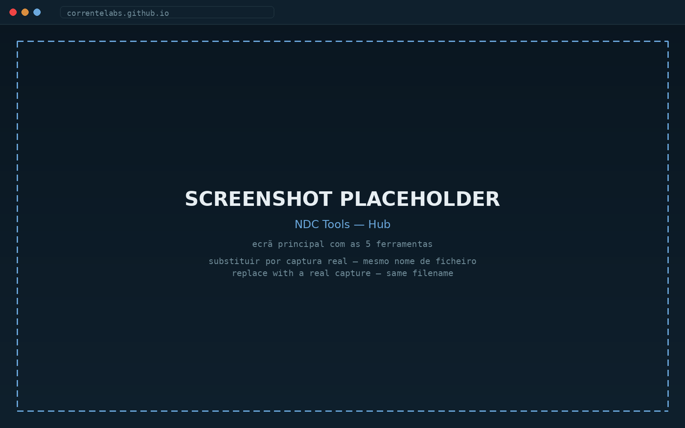
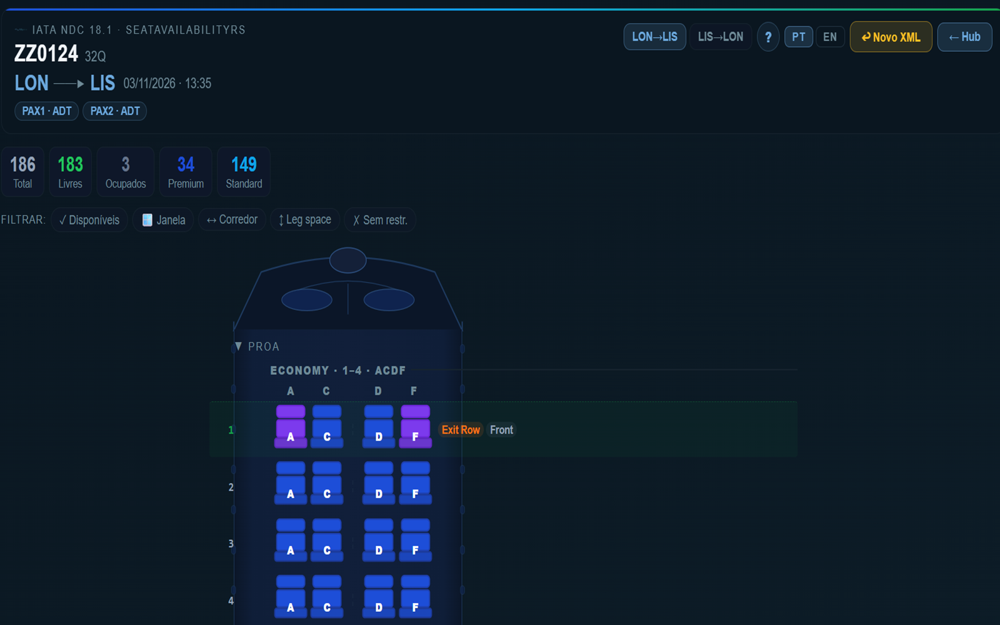
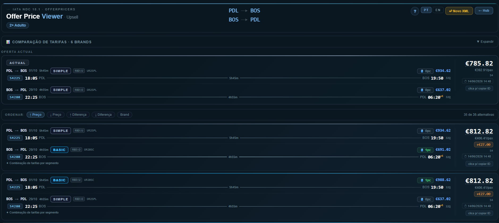

NDC Tools
v1.3.5Parsing e visualização de respostas IATA NDC 18.1
Cinco ferramentas integradas para trabalhar mensagens NDC (New Distribution Capability): mapas de lugares interativos, comparação de ofertas, serviços ancilares e o detalhe completo de uma reserva. Tudo processado localmente — nenhum XML sai do computador.
IATA NDC 18.1
SeatAvailabilityRS
AirShoppingRS
ServiceListRS
OfferPriceRS
OrderViewRS


